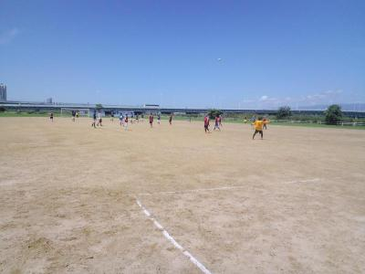

[122] 2015・07・26 活動報告

風が吹いてたけど激暑かったですね～。その風のせいで、マイテント壊れるし（涙）、修理に出さないと駄目やけど、治るかな～。
試合終わったら、運転中に足つりそうになるし、帰って風呂入って夕方までくたばってました。同じ人は何人か居たでしょう（笑）
今日はジュネオFCさんのお招きでフレンドリーマッチを開催しました。ジュネオFCさんにジェネシスさん対戦して頂き、本当にありがとうございました。おかげで楽しい時間を過ごせました。
今日のまっさんレンタル店は短パンとレガース貸し出しました、商売にしたら儲かるな（笑）。みんな黒っぽい短パンの中、ひときわブルー短パンがが目立ってて、顔とか背番号じゃなくて短パン見てパス（笑）、短パンもレガースも僕の日頃の行いが悪いのでたまには幸運のアイテムとなって、そのおかげで得点を決めたんでしょう（笑）
さて、暑さとかであんまり覚えてないけど、得点シーンを中心に一試合ごとに振り返っていきたいと思います。
１本目はジェネシスさんとでした。最初はほんとみんな動けてなくて、なんだかんだで裏を取られて２点を決められましたね。でもテラさんキーパーはそれ以上に結構決定的なシーンを防いでくれました。うちの得点シーンもテラさんからのゴールキックが、よっしーに渡り、よっしーが左サイドからゴール前まで切れ込んでシュート、かろうじてはじいて、ボールがその場でくるくる回っていたのを、中央から詰めていたシゲさんがごっつあん的でしたが押し込んでくれました。シゲさんも初得点でしたね。コメントお待ちしてます。
２本目はジュネオさんでした。双方ともにいい感じで結果的に引き分けでしたが、押し込むシーンも結構ありましたね。僕は左サイドでしたが、最近は得点者よりは攻撃の起点になることが楽しく感じてます。スガちゃんへの左足でのアーリークロスや切れ込んでテラさんへのラストパスとかドリしたりと結構、楽しかったですね。右サイドではボランチ？のタカさんがオーバーラップしてゴール前まで切れ込んでおしいシュートがありました。
守りも安定してましたが、ちょっとピンチの時にキーパーしてたよっしーがしりもちついて、笑いを誘って、相手がミスったという最強のプレーが炸裂しました（笑）
３本目はジェネシスさんでしたが、テラさんが左サイドから素晴らしいクロスをごろうさんがもうちょっとって感じでおしかったですね。まえちゃんが駆け上がっていって、スガちゃんにパス、スガちゃんがドリしてシュートっていう惜しい場面もありました。
４本目ジュネオさんでした。左サイドからの縦パスをスガちゃんが受けて、そのまま猛牛ドリブル、ペナのかなり外側から、インサイド気味でゴロのシュートがゴールの右ポストに当たってゴールになりました。足に僕が幸運のアイテムを貸したおかげですね（笑）、僕も右サイドでドリで３人くらいかわした時はちょっと自分に酔ってました（笑）
４本目か５本目か忘れたけど、よっしーのすましたかっちょいい感じでゴールが決まったと思ったら、見事にゴールから外れた時、決まったと思ってナイスプレーの拍手がありましたが、外した後にわだっちが「拍手をかえせ～」って言ってたのがおもろかったっすね。
５本目はジェネシスさんと１５分になりましたが、いい内容だったと思います。１点目は僕は休んでて、みてなかったんですがわだっちが横パスを出して、それをスガちゃんが受けて、キープしてシュートを打ったみたいです。結構、いいシュートだったみたいで音だけは聞こえてました。今日のゴリゴリプレー炸裂のスガちゃんの詳細な説明と２得点のコメントお待ちしています。それにしてもわだっちは今日は半端ない運動量だったと思います。
２点目は素晴らしいプレーでしたね。相手のパスをまえちゃんが山口蛍なみの後ろから走りこんでパスカット、その後、キーパーの前あたりにふわっとスルーパス、キーパーが出てきて取ろうとするところを、走りこんできたテラさんが浮いているボールをつま先でコントロールして、キーパーをかわして、そのままゴール。僕の接待パスはやっちまってくれたのになー、でもほんと技術は素晴らしいっす。今日のラッキーカラーについてと得点のコメントをお待ちしています。
最後、ゴール前でパス回されて、ゴールいれられた直後に試合終了、もったいなかったですね。でも頑張ってたと思います。僕は足に違和感あったので休んでたからね。
最後はジュネオさんと１５分でした。最後はちょっと遊び心で３バック、２ボランチで攻めを完全に５人でしましたが、３バックはやっぱり厳しかったですね。バックラインやボランチの位置や連動とかをきちんとしないと中々機能せずに、ちょうど間に来られて１点取られちゃいましたね。３ハーフ居たはずなんですが、ボランチとハーフの間がぽっかり空いていたので、最後の方は３トップみたいになってたんかな？、まあ、それなりに楽しめたので良しとしましょう、勝ち負けよりは楽しむことが肝心ですね。
まあ、そんな感じでした。正式入部して初試合参加のなかやん、いかがでしたか？いきなりの長時間で暑い中でしたが頑張ってましたね。また良かったら初試合の感想、カキコしてくださいね。
本日、参加された皆さん、本当にお疲れ様でした。
[121] 2015・07・19 活動報告
台風一過ってだいたい晴れ間になるんだけど、ややこしい天気でしたな～。
今日はグランドでの紅白戦予定だったのが使用不可で、通常の練習に変更になるわ、あてにならないのが再認識できたけど、yahooの天気予報だと曇りだったんで、開催することにしたけど、今日の朝、現地着いたら結構きつめの雨が降ってきたりと判断に迷う一日でした。
今日は合計で１５名の参加がありました。現地に８時ころに着いた時は雨とか全然でしたが、１０分後くらいからポツポツと・・、いつもの場所は水たまりとかが残っていて、奥の方で、木の下で用意してたらきつめの雨が降ってきて、雲の流れをみながら考えていたら、今日から正式入部のなかやんが来てくれたんだけど、それ以外は土手上で待機、中止になるかも？だったらここで待ってようというコスい輩がいっぱい居ましたね（笑）
まあ、ちょっと雨宿りはしましたが９時３０過ぎからはほとんど雨も降らずに、実施しました。
最初は雨の様子見ながら、各自パス練習でしたが、その後はずっとミニゲしました。来週が試合なので、ちょっと広めでしましたが、やっぱり広いとサイドチェンジや裏へ抜けたりといろんなプレーが出来ますね。広くてしんどいというよりはジメジメしてしんどかったですね。
最初の方は全然得点が入らずで、初得点はコーナーからのわだっちの見事なヘディングシュートでした。その後は僕も何度もクールポコ状態でしたが（よっしーがドヤ顔で外したときは笑けましたけどね（笑）。結構、プレーとしてはゴール前に裏から走りこんでそこにパスを出すような感じでよく得点になってたと思います。試合でもオフサイドは気を付けないと駄目ですが、そういった動きが出来ればいいですね。
最後はテラさんとなかやんのワンツーでゴールが決まり終了になりました。
来週は試合です、結構な試合数になるかもですので、多くの参加のほどよろしくお願いしますね。最近、出欠表明が遅くなってきていますので、あくまで予定でいいのである程度大丈夫かなって時は早目に登録お願いします（特に試合の時はね）
場所は海老江ですが、車の方は大阪市内からは２号線は右折禁止でたまに警察が居ますから川を渡ってUターンしたりしてくださいね。車じゃない方は個々での相乗りは構わないですが、JR東西線の海老江駅からそんなに遠くないので、各自電車で現地にお願いしますね。
本日参加された皆さん、お疲れ様でした。
[120] 2015・07・12 活動報告
暑いと言ったら魂を取られちゃうっていうのが某漫画のストーリーにあったけど、今日はそれだと全員終わってましたね（笑）
最近はずっと天気が良くない感じで先週は中止でしたが、今までの分のお返しというくらい、暑かった。スポーツドリンク２Lでも足りずに個人的にもちょっとくらっときましたね。参加された皆さんは大丈夫でしたか？でもほんと癒しの一本木のありがたさが身に染みました。
今日は早退、遅刻、体験参加を含めて最大で１４名の参加がありました。参加された皆さん、本当にお疲れ様でした。急に仕事や体調不良で欠席になる方もおられましたが、来週は台風が無ければ紅白戦しますので多くの参加お待ちしてます。
昨日にフットサルされたメンバーも何人かいたみたいですが、２日連続で良くするわとちょっと感心しました。今後もするのは構わないですが通常の活動に支障がないようにはお願いしますね。
今日は体験参加の方もおられたので、ほんと基礎的なメニューで、早退の人も居たので早目にミニゲしました。とにかく暑いので普段の倍近くは休憩時間を取ったと思います。
最初は鳥かごして、ポストシュート、センタリングシュートして、その後ミニゲでした。ミニゲではうーんスガちゃんがコスイことしてたのと、急遽途中から参加してくれたテラさんの足が長かったのと、わっちが顔面に自爆したくらいと、かきさんが右サイドからいいセンタリングをしたのと、わだっちが夏が好きというのはなるほどと思えるくらい動いていたとか、まあいろいろありました。
最後はふらっとしたのであまり覚えてないっす。
まあ、暑い中けが人もなく、無事終われたのは良かったです。これからの季節、水分は最低でも２Lは持ってきてください、出来ればスポーツドリンク系がいいと思います。
ほんとお疲れ様でした。今日は短文ですね。（笑）
[119] (無題)
皆さん、昨日はお疲れ様でした。
ラインズマンをしながらゲームを見てましたが皆さんの動きも毎回良くなっていてパスもだいぶ回ってる様に感じました。
自分的には昨日の試合では接待パスを心掛けてたんですが相手のディフェンスが堅かった事もあってなかなかいいパスがだせなかったです。得点シーンですがキックオフ前にゆうちゃんとごりんさんから前のスペースに出すと言う合図があったのでキックオフ直後に前の空いてるスペースに走り、そこへゆうちゃんがパスを出してくれたのでごりんさんとのワンツーでゴールする事が出来ました。ありがとうございました。次回はもっと接待パス頑張ります。お疲れ様でした。
[118] 皆さんお疲れ様でした。
本日参加された皆さん、お疲れ様でした。
少し雨は降りましたが、試合をするには良い気候で良かったです。
土曜の夜にフットサルをしていた事もあり、朝にはアキレスの
状態も少し悪化すると思って、戦闘力６０％と報告しておりましたが、
思っているより大丈夫でした！
コメント頂きました３試合目は本日の体力をほとんど使った感じでしたが
やってて楽しかったです。
実はボランチだったので、そんなに攻撃参加するつもりは無かったのですが、
ヨッシーさんが、敵のディフェンスを引き連れて中よりに行ってくれたので、自分のサイドが空いている事が多く、ついつい行ってしまいました。
後ろを守ってくれていた方には、ごめんなさいです。
今日は、ヨッシーさんにボールを集めまくったので、ヨッシーさん大変だったと
思います・・・が、次からもヨッシーさん目掛けて出しまくりますので、宜しくです(^0^)/
自分も入団させて頂いて、もう５ヶ月程度になりますが、プレーもトークも、もっとなじんで行けるようにしたいです。
これからも宜しくお願い致します。
[117] (無題)
皆様今日はお疲れ様でした！
今日は午前中のわりと涼しい間にサッカーできて良かったです。
1試合目は試合に出ていなかったので外で観ていましたが、よっしーさんナイスセーブでしたね！
２試合目は前をさせてもらいましたが、いまいち前の動きが分からず、よっしーさんにお任せでした^^;結構攻めていましたが、ゴールが奪えず悔しかったです。中学生の子にも簡単にかわされたり、取られたりしてました。
3試合目ではタカさんの後ろでしたが、いい攻めでしたね！カッキーさんのゴールはダイレクトでキレイなゴールで、上手いなぁと思いました。
4試合目は始まって3人あっと言う間にゴールが決まってビックリでした。最速ゴールですね！
この試合でコーナキックからのこぼれ球をシュートして、自分も念願のゴール決めることが出来ました??
もりちゃんさんが写真撮ってくれてましたが、ホンマに嬉しかったです！
最近体が動くのは1ヶ月前からにんにく卵黄油を飲んでいるせいかも知れません‥
ちなみに、よっしゃんとはそんな仲じゃないですよ(~_~;)
[116] (無題)
皆さん、お疲れさまでした。
一本目にキーパーをさせてもらったのですが、ついつい前に出過ぎてしまい、簡単なシュートに反応できず、決められてしまいました。
すいませんでした。
なんとか、この一点を取り返したくて、ついムキになってしまいました。その結果がこのザマです。せっかく前ばかりさせてもらってたのに、重ね重ねすいませんでした。
これからは、落ち着いてプレーするように、頑張ります。
皆さん、有り難うございました。
[115] 20150628 試合の様子
本日参加のみなさん、お疲れ様でした。はじめは寒いくらいで、途中で通り雨もありましたが走り回るにはいい気候だったように思います。本日も少しですが写真を第２掲示板にアップしておきました。まっとんのすばらしいシュートは撮れなかったけれど、決まった次の瞬間のいい写真（まっとんの喜ぶ姿がいい感じです）もあり、かきさんの見本のようなライマン姿もあります。よかったらみてください。
もりちゃん
[114] 2015・06・28 活動報告

かきさん、ついにやったね～。て、わだっちとか欠席で活動報告読まれた方、悪いことじゃないですよ（笑）
今日は金曜日の大雨でグランドが使えるか微妙かなって思ってましたが、少しぬかるみというか水たまりがありましたが、試合前に整理してまあまあいい状態で出来ましたね。最近の日曜日は雨男の僕の影響か、今日もいい意味でドピーカンが無くて涼しい風も吹いていて、一時的には天然シャワーみたいな霧雨もあったりで、活動しやすかったですね。
本日は朝早くからにもかかわらず、また基本的にお休み期間にもかかわらず練習試合のお相手をして頂いたSPARKさん、ありがとうございました。いつも紳士的なプレーで本当に楽しくさせて頂いてます。今後ともよろしくお願いいたします。
今日は２０分２本、１５分３本でしました。試合ごとにハイライトを中心に振り返りたいと思います。今日は合計で１６名の参加がありましたが、特に最初から分けずに混同でしました。
１試合目の初めはセンターラインに集まって挨拶とじゃんけんしましたが、最初はグーなのにチョキを出して笑いを誘ったかきさん、ついにやったね～（笑）あういうシュールな笑いはかきさんかふかわりょうくらいしか出来ないっすよ。
１試合目は結構相手に押されてた感がありましたね。ていうかごりんさんのバックパスをキーパーしてたよっしーがキャッチして間接フリーキックのイメージが強かったからかな？
ボランチの位置らへんでかきさんが奮闘してたけど、ボール取られて、少しミドル気味でコースにシュートがいい感じで決まって、先取点はSPARKさんでした。でもまえちゃんの鬼ツッコミは無かったから良かったね（笑）
全国に１０人は居ると思う、よっしーファンの黄色い声援が聞こえるような、よっしーのスーパーセーブもありましたね。相手のセンタリングをワンハンドでキャッチしようとして、さすがにそのままは取れなかったけど、すぐに体制を整えてキャッチング見事でした。
あと、試合前にテラさんに「今日は接待パス義務やで」って言ったら、本当にゴール前で普段なら余裕で決められる状況でも２，３回ラストパスを出してましたね。そのパスの後は見事にゴールにはなりませんでしたけどね（笑）
２本目はうーん一言でいうならよっしー劇場かな（笑）、いいところですごくボールをもらって、いい感じになるんだけど最後でぽしゃってって感じでしたが、あの突破力はさすがっすね。
あとは攻められて時にキーパーしてたかきさんも頑張ってくれてました。
僕はバックでしたが、草むらで滑って下手こきましたね（涙）
３本目が今日のメインになるかも～、お待たせしました。
結構サイド攻撃が上手くいって、僕は左サイドハーフでしたが、右サイドのタカさんにサイドチェンジする機会があって、攻撃の起点になる楽しさがありました。そういえばタカさんは戦闘力は６０％とか書いてましたが、その割にはえらい動いてましたよね。「私の戦闘力は５３万です」の間違いでしょう（笑）
一点目は僕からタカさんへサイドチェンジして、タカさんがサイドをドリで駆け上がってクロス、その後混戦模様でこぼれ球をタカさんがミドルで強烈なシュート、それがペナルティエリアの中で相手チームの手に当たりPKになりました。（あれはよけれないでしょう）
んで、タカさんが蹴るのかなって思ったら、タカさんはゆっくりと後方へ、センターフォワードだったかきさんの初得点を見たいのでかきさんコールしても「俺はあかんわー」で、何だかんだでなぜかまえちゃん、冷静に右隅に決めて、まえちゃんも初得点になりました。やったね。
ちなみに後でタカさんに聞くと、ＰＫはトラウマがあるらしい（笑）
タカさんの活躍が目立った感じでした、またコメントよろしくでっす。
２点目は僕が左サイドからドリで突っ込んで、ゴールのフォアポストに走りこんでいたテラさんにループパス、テラさんが落ち着いて、そこから誰がどうしたかはわかりませんが、右サイドから低空のライナー性のボールが出てきて、それを中央に来ていた柿さんがノートラップで押し込みました。わーパチパチ。ほんと念願の初ゴールでみんな喜んでましたね。かきさんにはぜひ喜びのコメントと、ボールが来るまでの詳細をカキコ待ってます。（出来ればまえちゃんも初コメント待ってマース）
結構、攻めていましたが、残念ながらめちゃいいシュートなのに、ポストにカーンという人が・・・。心境をコメントよろしくです。今日、欠席の人は誰かは、今までの文面で判断を（笑）、僕はワンツーを１０回くらい早口で言われた覚えがあります（笑）
あと相手チームに中学２年生が居たんですが、怪我とかさせないように気遣って、あまりプレッシャーをかけないように最初してたんだけど、結構上手くて、テラさんもかわされたりしてびっくりだったし、そのうち真剣モードになって必死にデフェンスしたり、体格で勝とうとしたりするちょっと大人げないけど気持ちはわかる、もりちゃんのプレーがめちゃおもろかったっす。（笑）
４本目始まる前にテラさんが「まっさん、５回のうち１回はシュートしていい？」って聞きに来て、思わず爆笑、もちろんですよ～。
んでキックオフ、僕はベンチでタカさんと少し横向いて話してて、前を向いたら、なんかハイタッチしてるし？？？？？、テラさんがゴール決めたそうです。３０秒も経っていなかったんじゃないかな？詳細はテラさんが書いてくれますので、お楽しみに～。
２点目は、愛情は強いんだいうスーパーゴールでしたね。コーナーになって、左からよっしゃんがコーナーを蹴って、そのままシュートにはならずに、ボールが転々とした前にはよっしゃんとの仲良しコンビのまっとんのところへ、ペナエリアの外だから２０Ｍ以上はあったし、バウンドしている状態で敵チームも少し前に居たのに、まっとんがよっしゃんの愛情確認とも言える、ロングボレーシュート、結果的に少しドライブ気味に相手ゴールに突き刺さる素晴らしいゴールを入れました。最近、プレッシャーが無くなってきているみたいで、普段の練習とかもいい動きですしね。ベストゴールの候補に入ってきますね。僕の深北のゴールを選んでもらえるようにみんなに賄賂を贈らないと（笑）、まっとんも初ゴールおめでとう。
ぜひ、まっとんには、「よっしゃんとのかけがえのない日々」でコメントお待ちしてます（笑）。それに対してよっしゃんも返事してよ（笑）ていうか、よっしゃん、手の状態大丈夫やったんかな？無理はしないようにね。
５本目もよっしーはいい動きをしてましたね。今日は最後まで良く動いてました。ボランチ気味の場所からもりちゃんが２名ほど見事なフェイントで交わして、絶妙な縦パスをよっしーがいい感じで走りこんでんだけど一歩及ばすでしたね。
最後の試合は結構一進一退でしたが、個人的にはタカさんと２トップで左右にはったりしたのがやりやすかったですね。サイドアタッカーはうちにも何名も居ますが、単に相手の裏側に居るだけではパスを出す人が上手に頭上を越えないと駄目だけど、一旦引いてもらいに行ったり、時には中に入ってもらったりする動きが出来れば効果的だと思いますので、体力がいりますが失敗してもいいのでまたみんな頑張りましょう。
まあ、今日も怪我無く楽しい時間を過ごせたことが何よりです。
カキコお願いした人以外でももちろんどんどんカキコしてくださいね。
本日参加された皆さん、お疲れさまでした。
[113] 2015・06・21 活動報告
今日みたいな朝の天気はほんとめんどくさいですねー。前日にはあてにならない予報だし、当日行かないとわからないことが今までもあって、明らかに台風直撃だからとかで前日に中止を確定出来るほうが楽でいいです。
まあ、ほんと朝の雨雲の動きとか現地行ってからの判断になったりすることが今後もあると思いますので、参加予定者は無いだろうではなくて、あるかも知れないという気持ちで準備しておいてくださいね。また、体調等で当日雨だったら・・やそれ以外でも当日に急に休む場合は連絡お願いしますね。（たまに携帯忘れてしまいますが（笑））
まあ、そんな中で今日も現地についたら、あ、雨が上がってきて、雲も薄くなってきたから出来そうだと、参加予定者にメールした後に、ちょっと強く降ってきて、やっぱりやめようとか逡巡しながらでしたが、グランドはともかく、天気は太陽が出てくるまでになって、最終的には暑いくらいでしたね。
今日は遅刻、早退、体験参加を合わせて１２名の参加がありました。いつもの場所は水はけが悪く、管理小屋の方でミニゲをずっとしてました。本日参加された皆さん、お疲れ様でした。
今日はミニゲでしたが、一番おもろかったのは、よっしゃんとはまっちのサイドの突撃攻撃のやりあいですかね。特にはまっちはグランド状態が悪い時は無敵ですね（笑）
あとは、もりちゃんが最初の試合でからまわりで、かっきーも全体的にいつもどおりで（笑）、あとはシゲさんがよっしゃんをよくこかしていたイメージがありましたね。
まっとんは今日もいい動きで、ごろうさんも良く動いてました。僕はかなりさぼってましたが、ふっかんにかなりボール取られた感があるのと、シゲさんに股抜きの練習台になってもらったことが印象だったかな。
まえちゃんは急に仕事が入ったとのことで、遅刻になりましたが、かっきーが「絶対、嘘や～」っていいまくってたのがおもろかったです（笑）
体験参加のなかやん（勝手に名づけてます（笑））はどうでしたか？久々で足がやばかったみたいですが、無理をしないでまた良ければ参加してくださいね。いいプレーも結構ありましたよ。
あと、もりちゃん足は大丈夫かな？それまでスーパーもりちゃんやったのに残念でしたね。
来週は試合です。まあ、勝ち負けこだわらずに楽しくしましょう。